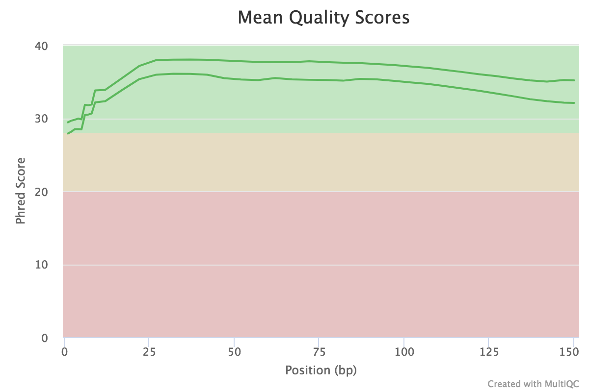
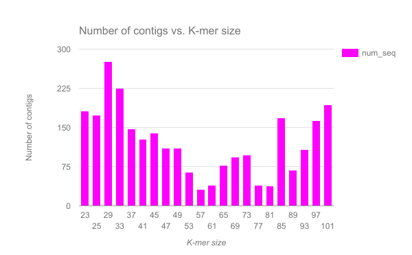
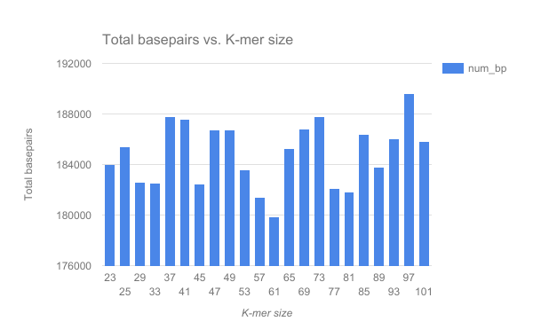

Velvet is one of a number of de novo assemblers that use short read sets as input (e.g. Illumina Reads). The assembly method is based on the manipulation of de Bruijn graphs, via the removal of errors and the simplication of repeated regions.
comment Comment
For information about Velvet, you can check its (nice) Wikipedia page.
For this tutorial, we have a set of reads from an imaginary Staphylococcus aureus bacterium with a miniature genome (197,394 bp). Our mutant strain read set was sequenced with the whole genome shotgun method, using an Illumina DNA sequencing instrument. From these reads, we would like to rebuild our imaginary Staphylococcus aureus bacterium via a de novo assembly of a short read set using the Velvet assembler.
Copy the link location (Right-click on the filename then “Copy Link Address”)
Open the Galaxy Upload Manager
Select Paste/Fetch Data
Paste the link into the text field
Change the data-type to fastqsanger
Press Start
Change the name of the files to mutant_R1 and mutant_R2.
As a default, Galaxy uses the link as the name of the new dataset. It also does not link the dataset to a database or a reference genome.
tip Tip: Renaming a dataset
Click on the galaxy-pencilpencil icon for the dataset to edit its attributes
In the central panel, change the Name field
Click the Save button
Inspect the content of a file.
tip Tip: Inspecting the content of a dataset
Click on the galaxy-eye (eye) icon next to the relevant history entry
View the content of the file in the central panel
question Questions
What are four key features of a FASTQ file?
What is the main difference between a FASTQ and a FASTA file?
solution Solution
Each sequence in a FASTQ file is represented by 4 lines: 1st line is the id, 2nd line is the sequence, 3rd line is not used, and 4th line is the quality of sequencing per nucleotide
In a FASTQ file, not only are the sequences present, but information about the quality of sequencing is also included.
The reads have been sequenced from an imaginary Staphylococcus aureus bacterium using an Illumina DNA sequencing instrument. We obtained the 2 files we imported (mutant_R1 and mutant_R2)
question Question
Why do we have 2 files here if we only sequenced the bacteria once?
solution Solution
The bacteria has been sequenced using paired-end sequencing. The first file corresponds to forward reads and the second file to reverse reads.
Evaluate the input reads
Before doing any assembly, the first questions you should ask about your input reads include:
What is the coverage of my genome?
How good is my read set?
Do I need to ask for a new sequencing run?
Is it suitable for the analysis I need to do?
We will evaluate the input reads using the FastQC tool. This tool runs a standard series of tests on your read set and returns a relatively easy-to-interpret report. We will use it to evaluate the quality of our FASTQ files and combine the results with MultiQC.
hands_on Hands-on: FastQC on a fastq file
FastQCtool with the following parameters
“Short read data from your current history” to (Multiple datasets) mutant_R1.fastq and mutant_R2.fastq
MultiQCtool with the following parameters
“Software name” to FastQC
“Result file” to the raw data files generated by FastQC
MultiQC generates a webpage combining reports for FastQC on both datasets. It includes these graphs and tables:
General statistics
This is important in setting maximum k-mer size for an assembly.
comment Getting the length of sequences
Click on Configure Columns
Check Length
Close the window
question Questions
How long are the sequences?
What is the average coverage of the genome, given our imaginary Staphylococcus aureus bacterium has a genome of 197,394 bp?
solution Solution
The sequences are 150 bp long
We have 2 x 12,480 sequences of 150 bp, so the average genome coverage is: 2 * 12480 * 150 / 197394, or approximately 19 X coverage.
Sequence Quality Histograms
Dips in quality near the beginning, middle or end of the reads may determine the trimming/cleanup methods and parameters to be used, or may indicate technical problems with the sequencing process/machine run.
Figure 1: The mean quality value across each base position in the read
question Questions
What does the y-axis represent?
Why is the quality score decreasing across the length of the reads?
solution Solution
The y-axis represents the quality score for each base (an estimate of the error during sequencing).
The quality score is decreasing accross the length of the reads because the sequencing become less and less reliable at the end of the reads.
Per Sequence GC Content
High GC organisms tend not to assemble well and may have an uneven read coverage distribution.
Per Base N Content
The presence of large numbers of Ns in reads may point to a poor quality sequencing run. You will need to trim these reads to remove Ns.
k-mer content
The presence of highly recurring k-mers may point to contamination of reads with barcodes or adapter sequences.
comment Comment
For a fuller discussion of FastQC outputs and warnings, see the FastQC website link, including the section on each of the output reports, and examples of “good” and “bad” Illumina data.
We won’t be doing anything to these data to clean it up as there isn’t much need. Therefore we will get on with the assembly!
Assemble reads with Velvet
Now, we want to assemble our reads to find the sequence of our imaginary Staphylococcus aureus bacterium. We will perform a de novo assembly of the reads into long contiguous sequences using the Velvet short read assembler.
The first step of the assembler is to build a de Bruijn graph. For that, it will break our reads into k-mers, i.e. fragments of length k. Velvet requires the user to input a value of k (k-mer size) for the assembly process. Small k-mers will give greater connectivity, but large k-mers will give better specificity.
hands_on Hands-on: Assemble the reads
FASTQ interlacertool with the following parameters
“Type of paired-end datasets” to 2 separate datasets
“Left-hand mates” to mutant_R1.fastq
“Right-hand mates” to mutant_R2.fastq
Currently our paired-end reads are in 2 files (one with the forward reads and one with the reverse reads), but Velvet requires only one file, where each read is next to its mate read. In other words, if the reads are indexed from 0, then reads 0 and 1 are paired, 2 and 3, 4 and 5, etc. Before doing the assembly per se, we need to prepare the files by combining them.
velvethtool with the following parameters
“Hash Length” to 29
“Input Files”: click on Insert Input Files
“file format” to fastq
“read type” to shortPaired reads
“Dataset” to the pairs output of FASTQ interlacer
The tool takes our reads and break them into k-mers.
velvetgtool with the following parameters
“Velvet Dataset” to the output of velveth
“Using Paired Reads” to Yes
This last tool actually does the assembly.
Two files are generated:
A “Contigs” file
This file contains the sequences of the contigs longer than 2k. In the header of each contig, a bit of information is added:
the k-mer length (called “length”): For the value of k chosen in the assembly, a measure of how many k-mers overlap (by 1 bp each overlap) to give this length
the k-mer coverage (called “coverage”): For the value of k chosen in the assembly, a measure of how many k-mers overlap each base position (in the assembly).
A “Stats” file
This is a tabular file giving for each contig the k-mer lengths, k-mer coverages and other measures.
Collect some statistics on the contigs
question Question
How many contigs have been built?
What is the mean, min and max length of the contigs?
solution Solution
190
To compute this information, we can use the Datamash tool on the 2nd columns (length). Be careful with the first line, the header. As a result, we obtain: 597.82 as mean, 1 as min and 12904 as max. It would mean that the smallest contig has a length of 1 bp, even smaller than k. The length on the 2nd column corresponds to length of the contig in k-mers. This means that the smallest contig has a length of 1k = 29. So to obtain the real length, we need to add k-1 to the length. We then obtain a mean contig length of 625.82 bp, a min contig of 29 bp and a max contig of 12,932 bp.
This table is limitted, but we will now collect more basic statistics on our assembly.
hands_on Hands-on: Collect fasta statistics on our contigs
Quasttool with
“Contigs/scaffolds output file” to the output of velvetg
“Type of data” to contig
“Reference File” to wildtype.fna
“Type of organism” to Prokaryotes
“Lower Threshold” to 500
“Thresholds” to 0,1000
This tool generates 5 output files, but we will focus on the HTML report and the Icarus viewer.
question Question
What is represented in the Icarus viewer?
solution Solution
Icarus is a novel genome visualizer for accurate assessment and analysis of genomic draft assemblies. It draws contigs ordered from longest to shortest, highlights N50, N75 (NG50, NG75) and long contigs larger than a user-specified threshold
The HTML report reports many statistics computed by QUAST to assess the quality of the assembly:
Statistics about the quality of the assembly when compared to the reference (fraction of the genome, duplication ratio, etc)
Misassembly statistics, including the number of misassemblies
A misassembly is a position in the contigs (breakpoints) that satisfy one of the following criteria:
the left flanking sequence aligns over 1 kbp away from the right flanking sequence on the reference;
flanking sequences overlap on more than 1 kbp
flanking sequences align to different strands or different chromosomes
Unaligned regions in the assembly
Mismatches compared to the reference genomes
Statistics about the assembly per se, such as the number of contigs and the length of the largest contig
question Question
How many contigs have been constructed?
Which proportion of the reference genome do they represent?
How many misassemblies have been found?
Has the assembly introduced mismatches and indels?
What are N50 and L50?
Is there a bias in GC percentage induced by the assembly?
solution Solution
190 contigs have been constructed, but only 47 have a length > 500 bp.
The contigs represents 87.965% of the reference genome.
1 misassembly has been found: it corresponds to a relocation, i.e. a misassembly event (breakpoint) where the left flanking sequence aligns over 1 kbp away from the right flanking sequence on the reference genome.
8.06 mismatches per 100 kbp and 4.03 indels per 100 kbp are found.
N50 is the length for which the collection of all contigs of that length or longer covers at least half an assembly. In other words, if contigs were ordered from small to large, half of all the nucleotides will be in contigs this size or larger. And L50 is the number of contigs equal to or longer than N50: L50 is the minimal number of contigs that cover half the assembly.
The GC % in the assembly is 33.64%, really similar to the one of the reference genome (33.43%).
Discussion
hands_on (Optional) Hands-on: Rerun for values k ranging from 31 to 101
velvethtool with the same parameters as before except
“Hash Length” to a value between 31 and 101
velvetgtool with the same parameters as before
Quasttool with the same parameters as before
We have completed an assembly on this data set for a number of k values ranging from 29 to 101. A few of the assembly metrics appear below.
Figure 2: Number of contigs in the assembly for various k-mer sizesFigure 3: Largest contig in each of the assemblies by k-mer sizeFigure 4: Total number of base pairs in all the contigs for each assembly by k-mer sizeFigure 5: N50 metric for each of the assemblies by k-mer size
question Questions
Are there any distinct features in the charts?
Does it look like one assembly might be better than some of the others?
The reasons for these patterns will be discussed in detail in the De Bruijn graph assembly slides and tutorial.
keypoints Key points
We assembled some Illumina fastq reads into contigs using a short read assembler called Velvet
We showed what effect one of the key assembly parameters, the k-mer size, has on the assembly
It looks as though there are some exploitable patterns in the metric data vs the k-mer size.
congratulations Congratulations on successfully completing this tutorial!
feedback Give us even more feedback on this content!
To give us more detailed feedback about these materials, please take a moment to fill in the extended Feedback Form.
 Simon Gladman
Simon Gladman